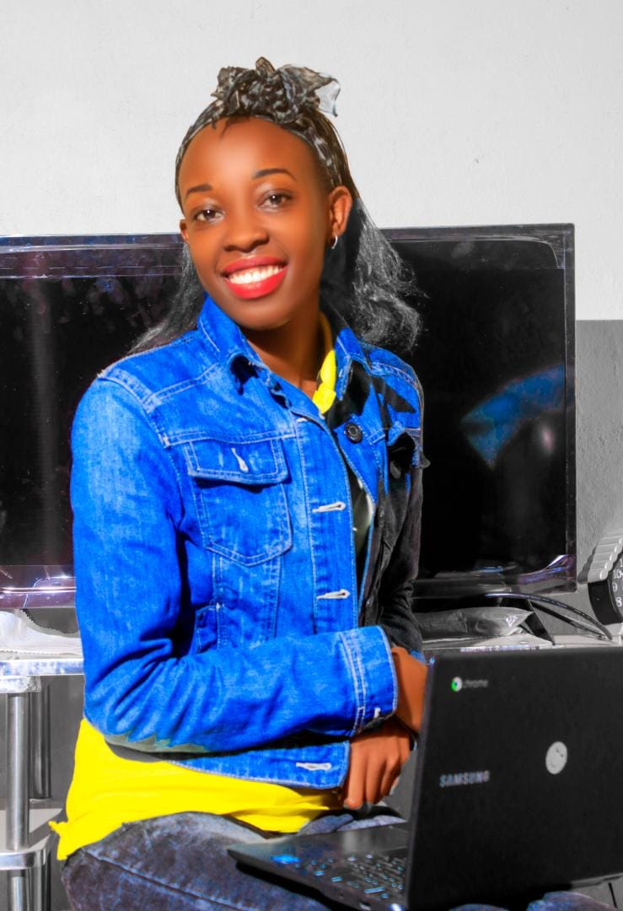

Sybille Anny Izere
Founder and Executive Director
Sybille is a joyful humanitarian, passionate about working and supporting young refugee women and creating a world of opportunities. Her career is in Communications and Project Management. She loves traveling, meeting new people, Writing short stories, taking photos and learning.